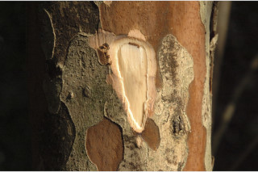
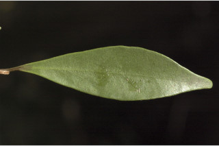
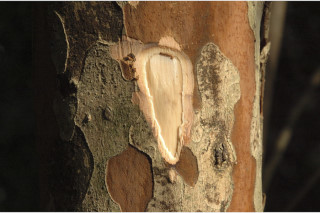
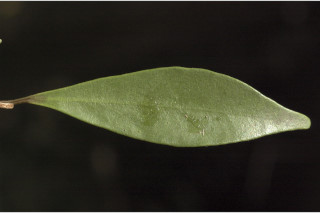

Small trees ca. 8 m tall.
8 ಮೀ. ಎತ್ತರದವರೆಗಿನ ಸಣ್ಣ ಮರಗಳು.
Small trees ca. 8 m tall.
சிறியமரங்கள் 8 மீ. உயரம் வரை வளரக்கூடியது.
Bark brownish, irregularly large flaky; blaze pinkish.
ತೊಗಟೆ ಕಂದು ಛಾಯೆ ಹೊಂದಿರುತ್ತದೆ ಮತ್ತು ಅನಿಯತವಾದ ದೊಡ್ಡ ಗಾತ್ರದ ಚಕ್ಕೆಗಳನ್ನು ಹೊಂದಿರುತ್ತದೆ;ಕಚ್ಚು ಮಾಡಿದ ಜಾಗ ನಸುಗೆಂಪು ಛಾಯೆಯನ್ನು ಹೊಂದಿರುತ್ತದೆ.
Bark brownish, irregularly large flaky; blaze pinkish.
மரத்தின் பட்டை ப்ரவுன் நிறமானது, ஒழுங்கற்ற பெரிய செதில்களாக உதிருபவை; உள்பட்டை பிங்க் நிறமானது.
Young branchlets subterete, pubescent.
ಎಳೆಯ ಕಿರುಕೊಂಬೆಗಳು ಉಪ-ದುಂಡಾಗಿದ್ದು ಮೃದುತುಪ್ಪಳದಿಂದ ಆವೃತಗೊಂಡಿರುತ್ತವೆ.
Young branchlets subterete, pubescent.
சிறியநுனிக்கிளைகள் குறுக்குவெட்டுத் தோற்றத்தில் வளையமானது, உரோமங்களுடையது.
Leaves simple, opposite, decussate; petiole ca. 0.3 cm long, canaliculate, glabrous; lamina 3-6 x 1-1.3 cm, narrow elliptic to narrow oblanceolate, apex obtuse or acuminate with blunt tip, base attenuate, margin recurved, pellucid gland dotted, coriaceous, pubescent when young, later glabrous; midrib flat above; secondary tertiary and intramarginal nerves obscure.
ಎಲೆಗಳು ಸರಳವಾಗಿದ್ದು ಅಭಿಮುಖವಾಗಿ ಜೋಡನೆಗೊಂಡಿದ್ದು ಕಾಂಡದ ಎರಡೂ ಕಡೆ ಎದುರು ಬದರಿನ ಲಂಬ ಸಾಲಿನಲ್ಲಿರುತ್ತವೆ; ತೊಟ್ಟುಗಳುಅಂದಾಜು 0.3ಸೆಂ.ಮೀ. ಉದ್ದವಿದ್ದು ಕಾಲುವೆಗೆರೆ ಸಮೇತವಿರುತ್ತವೆ ಮತ್ತುರೋಮರಹಿತವಾಗಿರುತ್ತವೆ;ಪತ್ರಗಳು 3 – 6 X 1 – 1.3 ಸೆಂ.ಮೀ.ವರೆಗಿನ ಗಾತ್ರವಿದ್ದು ಸಂಕುಚಿತ ಅಂಡವೃತ್ತದಿಂದ ಸಂಕುಚಿತ ಅಂಡ-ಭರ್ಜಿಯವರೆಗಿನ ಆಕಾರ ಹೊಂದಿದ್ದು,ಚೂಪಲ್ಲದ ಅಥವಾ ಮೊಂಡಾಗ್ರವುಳ್ಳ ಕ್ರಮೇಣ ಚೂಪಾಗುವ ತುದಿ,ಒಳಬಾಗಿದ ಬುಡ,ಹಿಂಸುರುಳಿಗೊಂಡ ಅಂಚು,ಪ್ರಕಾಶ ಭೇಧ್ಯ ರಸಗ್ರಂಥಿ ಚುಕ್ಕೆಗಳನ್ನು ಹೊಂದಿದ್ದು ತೊಗಲನ್ನೋಲುವ ಮೇಲ್ಮೈ ಹೊಂದಿರುತ್ತವೆ ಮತ್ತು ಎಳೆಯದಾಗಿದ್ದಾಗ ಮೃದುತುಪ್ಪಳದಿಂದ ಕೂಡಿದ್ದು ನಂತರ ರೋಮರಹಿತವಾಗಿರುತ್ತವೆ;ಮಧ್ಯ ನಾಳ ಪತ್ರದ ಮೇಲ್ಭಾಗದಲ್ಲಿ ಚಪ್ಪಟೆಯಾಗಿರುತ್ತದೆ; ಎರಡನೇ ,ಮೂರನೇ ದರ್ಜೆಯ ಮತ್ತು ಅಂತರ ಅಂಚಿನ ನಾಳಗಳು ಅಸ್ಪಷ್ಟವಾಗಿರುತ್ತವೆ.
Leaves simple, opposite, decussate; petiole ca. 0.3 cm long, canaliculate, glabrous; lamina 3-6 x 1-1.3 cm, narrow elliptic to narrow oblanceolate, apex obtuse or acuminate with blunt tip, base attenuate, margin recurved, pellucid gland dotted, coriaceous, pubescent when young, later glabrous; midrib flat above; secondary tertiary and intramarginal nerves obscure.
இலைகள் தனித்தவை, எதிரடுக்கமானவை, குறுக்குமறுக்கானவை; இலைக்காம்பு 0.3 செ.மீ. நீளமானது, குறுக்குவெட்டுத் தோற்றத்தில் கேனாலிகுலேட், உரோமங்களற்றது; இலை அலகு 3-6 X 1-1.3 செ.மீ., குறுகிய நீள்வட்ட வடிவானது முதல் குறுகிய தலைகீழ் ஈட்டி வடிவானது, அலகின் நுனி மெட்டையானது அல்லது அதிக்கூரியதுடன் அதன் முனை மழுங்கியது, அலகின் தளம் அட்டனுவேட், அலகின் விளிம்பு மற்றும் பின்புறம் வளைந்து காணப்படும், ஒளிபுகும் சுரப்பி புள்ளிகளுடையது, கோரியேசியஸ், இளம்பருவத்தில் உரோமங்களுடையது, முதிரும் போது உரோமங்களற்றது; மையநரம்பு மேற்பரப்பில் அலகின் பரப்பிற்கு சமமானது; இரண்டாம் நிலை நரம்புகள், மூன்றாம் நிலை நரம்புகள் மற்றும் விளிம்பு நரம்பு (இண்ட்ராமார்ஜினல்) கண்களுக்கு புலப்படாது.
Inflorescence cymes, 2-3 flowered on short axillary tubercled peduncles, rarely solitary; petals white.
ಹೂಗಳು ಮಧ್ಯಾರಂಭಿ ಪುಷ್ಪ ಮಂಜರಿಯಲ್ಲಿದ್ದು 2ರಿಂದ 3 ಹೂಗಳನ್ನೊಳಗೊಂಡ ಕಿರುಗಾತ್ರದ ಅಕ್ಷಾಕಂಕುಳಿನಲ್ಲಿರುವ,ಗುಬುಟುಗಳ ಮೇಲಿನ ವೃಂತದಲ್ಲಿರುತ್ತವೆ,ಅಪರೂಪವಾಗಿ ಒಂಟಿ ಹೂವಿರುತ್ತದೆ;ಪುಷ್ಪ ದಳ ಬಿಳಿಯಾಗಿರುತ್ತದೆ.
Inflorescence cymes, 2-3 flowered on short axillary tubercled peduncles, rarely solitary; petals white.
மஞ்சரி சைம் வகை, 2-3 மலர்களுடையது குட்டையான மஞ்சரிக்காம்பு உடையது, இலைக்கோணங்களில் காணப்படுபவை, கழலைகள் மேல் தோன்றுபவை, அரிதாக தனித்தவை; அல்லி இதழ்கள் வெள்ளை நிறமானது.
Berry, crowned with calyx lobes; seed one.
ಬೆರ್ರಿ ಫಲಗಳು ಮುಕುಟದಲ್ಲಿ ಪುಷ್ಪಪಾತ್ರೆಯ ಎಸಳುಗಳನ್ನು ಹೊಂದಿರುತ್ತವೆ;ಬೀಜ ಒಂದು.
Berry, crowned with calyx lobes; seed one.
முழுச்சதைகனி (பெர்ரி), நிரந்தரமான புல்லி இதழ்களுடையவை; ஒரு விதையுள்ள கனி.
 


